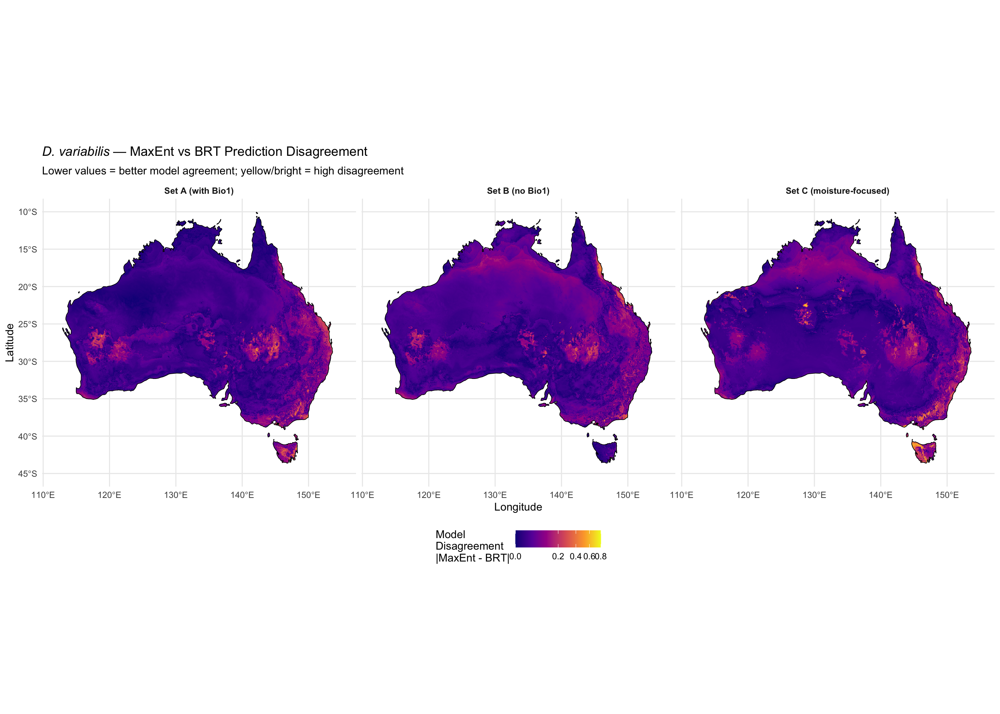
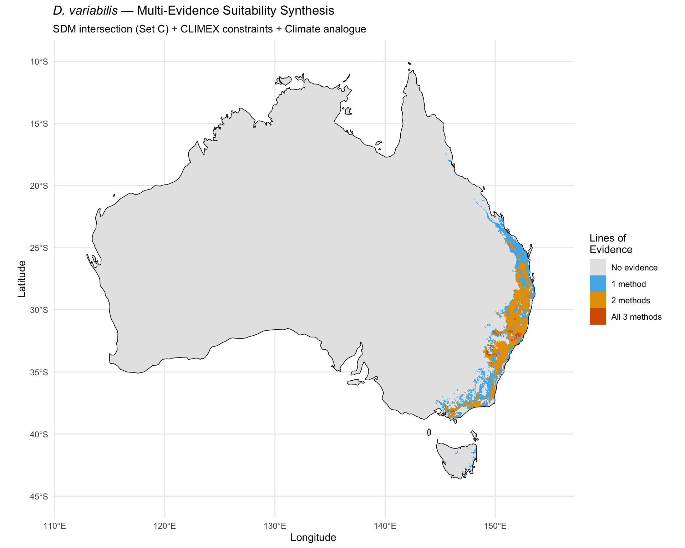

library(tidyverse)
library(terra)
library(sf)
library(rnaturalearth)
library(rnaturalearthdata)Step 7c: Improved Ensemble and Model Agreement
Dermacentor variabilis Species Distribution Model
Overview
The original ensemble (simple mean of MaxEnt and BRT) is not meaningful when models disagree by 7x (56.4% vs 8.4%). This script produces improved ensemble products using the sensitivity model results (Set B and C variable sets):
- Conservative (intersection) ensemble — suitable only where BOTH MaxEnt and BRT agree
- Model disagreement map — spatial uncertainty indicator
- MESS-masked conservative ensemble — intersection further masked to analogous climate
- Multi-evidence synthesis — areas where SDMs, CLIMEX constraints, and climate analogues converge
1. Load predictions and thresholds
base_dir <- "~/Library/CloudStorage/OneDrive-CSIRO/OneDrive - Docs/01_Projects/SDM/Dvariabilis_SDM"
processed_dir <- file.path(base_dir, "processed_data")
figures_dir <- file.path(base_dir, "figures")
aus <- ne_countries(country = "Australia", scale = "medium", returnclass = "sf")
# Original (Set A) predictions
pred_A_maxent <- rast(file.path(processed_dir, "pred_aus_maxent.tif"))
pred_A_brt <- rast(file.path(processed_dir, "pred_aus_brt.tif"))
thresh_A <- readRDS(file.path(processed_dir, "model_thresholds.rds"))
# Sensitivity predictions (Set B and C)
# Check which sensitivity outputs exist
has_setB <- file.exists(file.path(processed_dir, "pred_aus_maxent_setB.tif"))
has_setC <- file.exists(file.path(processed_dir, "pred_aus_maxent_setC.tif"))
if (has_setB) {
pred_B_maxent <- rast(file.path(processed_dir, "pred_aus_maxent_setB.tif"))
pred_B_brt <- rast(file.path(processed_dir, "pred_aus_brt_setB.tif"))
thresh_B <- readRDS(file.path(processed_dir, "sensitivity_thresholds.rds"))$setB
}
if (has_setC) {
pred_C_maxent <- rast(file.path(processed_dir, "pred_aus_maxent_setC.tif"))
pred_C_brt <- rast(file.path(processed_dir, "pred_aus_brt_setC.tif"))
thresh_C <- readRDS(file.path(processed_dir, "sensitivity_thresholds.rds"))$setC
}
# CLIMEX constraints (if available)
has_climex <- file.exists(file.path(processed_dir, "climex_suitable_aus.tif"))
if (has_climex) {
climex_suitable <- rast(file.path(processed_dir, "climex_suitable_aus.tif"))
}
# Mahalanobis distance (if available)
has_mahal <- file.exists(file.path(processed_dir, "mahalanobis_distance_aus.tif"))
if (has_mahal) {
mahal_dist <- rast(file.path(processed_dir, "mahalanobis_distance_aus.tif"))
chi_sq_95 <- qchisq(0.95, df = length(readLines(
file.path(processed_dir, "selected_variables_setC.txt"))))
climate_analogue <- mahal_dist <= chi_sq_95
}
cat("Available layers:\n")
cat(sprintf(" Set A (original): %s\n", "YES"))
cat(sprintf(" Set B (no Bio1): %s\n", ifelse(has_setB, "YES", "NO — run 05c first")))
cat(sprintf(" Set C (moisture): %s\n", ifelse(has_setC, "YES", "NO — run 05c first")))
cat(sprintf(" CLIMEX constraints: %s\n", ifelse(has_climex, "YES", "NO — run 10c first")))
cat(sprintf(" Climate analogue: %s\n", ifelse(has_mahal, "YES", "NO — run 10 first")))Available layers:
Set A (original): YES
Set B (no Bio1): YES
Set C (moisture): YES
CLIMEX constraints: YES
Climate analogue: YES2. Conservative (intersection) ensembles
cell_areas <- cellSize(pred_A_maxent, unit = "km")
aus_total <- sum(values(cell_areas * !is.na(pred_A_maxent)), na.rm = TRUE)
calc_area_pct <- function(binary_raster) {
area <- sum(values(cell_areas * binary_raster), na.rm = TRUE)
c(area_km2 = area, pct = 100 * area / aus_total)
}
# Set A intersection
A_maxent_bin <- pred_A_maxent >= thresh_A$maxent$maxss
A_brt_bin <- pred_A_brt >= thresh_A$brt$maxss
A_intersection <- A_maxent_bin & A_brt_bin
A_union <- A_maxent_bin | A_brt_bin
# Set B intersection (if available)
if (has_setB) {
B_maxent_bin <- pred_B_maxent >= thresh_B$maxent$threshold
B_brt_bin <- pred_B_brt >= thresh_B$brt$threshold
B_intersection <- B_maxent_bin & B_brt_bin
B_union <- B_maxent_bin | B_brt_bin
}
# Set C intersection (if available)
if (has_setC) {
C_maxent_bin <- pred_C_maxent >= thresh_C$maxent$threshold
C_brt_bin <- pred_C_brt >= thresh_C$brt$threshold
C_intersection <- C_maxent_bin & C_brt_bin
C_union <- C_maxent_bin | C_brt_bin
}
# Report areas
cat("--- Intersection (Conservative) Ensemble Areas ---\n\n")
a <- calc_area_pct(A_intersection)
sprintf("Set A intersection: %.0f km2 (%.1f%%)", a[1], a[2])
a <- calc_area_pct(A_union)
sprintf("Set A union: %.0f km2 (%.1f%%)", a[1], a[2])
if (has_setB) {
a <- calc_area_pct(B_intersection)
sprintf("Set B intersection: %.0f km2 (%.1f%%)", a[1], a[2])
}
if (has_setC) {
a <- calc_area_pct(C_intersection)
sprintf("Set C intersection: %.0f km2 (%.1f%%)", a[1], a[2])
}--- Intersection (Conservative) Ensemble Areas ---
[1] "Set A intersection: 189582 km2 (2.5%)"
[1] "Set A union: 251832 km2 (3.3%)"
[1] "Set B intersection: 210057 km2 (2.7%)"
[1] "Set C intersection: 165276 km2 (2.1%)"3. Model disagreement maps
# Continuous disagreement: |MaxEnt - BRT| for each set
disagree_A <- abs(pred_A_maxent - pred_A_brt)
names(disagree_A) <- "disagreement"
panels <- list(
list(rast = disagree_A, label = "Set A (with Bio1)")
)
if (has_setB) {
disagree_B <- abs(pred_B_maxent - pred_B_brt)
panels <- c(panels, list(list(rast = disagree_B, label = "Set B (no Bio1)")))
}
if (has_setC) {
disagree_C <- abs(pred_C_maxent - pred_C_brt)
panels <- c(panels, list(list(rast = disagree_C, label = "Set C (moisture-focused)")))
}
# Build plot data
disagree_plot <- list()
for (p in panels) {
df <- as.data.frame(p$rast, xy = TRUE, na.rm = TRUE)
names(df)[3] <- "disagreement"
df$set <- p$label
disagree_plot <- c(disagree_plot, list(df))
}
disagree_df <- bind_rows(disagree_plot)
p <- ggplot() +
geom_raster(data = disagree_df, aes(x = x, y = y, fill = disagreement)) +
geom_sf(data = aus, fill = NA, colour = "black", linewidth = 0.3) +
facet_wrap(~set, ncol = length(panels)) +
scale_fill_viridis_c(
name = "Model\nDisagreement\n|MaxEnt - BRT|",
option = "plasma",
limits = c(0, 0.8),
trans = "sqrt"
) +
labs(
title = expression(italic("D. variabilis") ~ "— MaxEnt vs BRT Prediction Disagreement"),
subtitle = "Lower values = better model agreement; yellow/bright = high disagreement",
x = "Longitude", y = "Latitude"
) +
theme_minimal(base_size = 11) +
theme(strip.text = element_text(face = "bold"), legend.position = "bottom") +
coord_sf(xlim = c(112, 155), ylim = c(-45, -10))
print(p)
ggsave(file.path(figures_dir, "07c_model_disagreement.png"),
p, width = 14, height = 6, dpi = 300)
# Report mean disagreement
cat("Mean absolute disagreement across Australia:\n")
sprintf(" Set A: %.3f", mean(values(disagree_A, na.rm = TRUE)))
if (has_setB) sprintf(" Set B: %.3f", mean(values(disagree_B, na.rm = TRUE)))
if (has_setC) sprintf(" Set C: %.3f", mean(values(disagree_C, na.rm = TRUE)))Mean absolute disagreement across Australia:
[1] " Set A: 0.029"
[1] " Set B: 0.036"
[1] " Set C: 0.038"4. Multi-evidence synthesis
Combine all available evidence sources to identify areas of highest confidence.
# Use the best available sensitivity set for the synthesis
if (has_setC) {
best_intersection <- C_intersection
best_label <- "Set C"
} else if (has_setB) {
best_intersection <- B_intersection
best_label <- "Set B"
} else {
best_intersection <- A_intersection
best_label <- "Set A"
}
# Count evidence layers (how many independent methods agree on suitability)
evidence_count <- best_intersection * 1 # SDM intersection = 1
if (has_climex) {
# Resample if needed
if (!compareGeom(climex_suitable, best_intersection, stopOnError = FALSE)) {
climex_r <- resample(climex_suitable, best_intersection, method = "near")
} else {
climex_r <- climex_suitable
}
evidence_count <- evidence_count + climex_r
}
if (has_mahal) {
if (!compareGeom(climate_analogue, best_intersection, stopOnError = FALSE)) {
analogue_r <- resample(climate_analogue, best_intersection, method = "near")
} else {
analogue_r <- climate_analogue
}
evidence_count <- evidence_count + analogue_r
}
names(evidence_count) <- "n_evidence"
# Map evidence count
ev_df <- as.data.frame(evidence_count, xy = TRUE, na.rm = TRUE)
max_evidence <- max(values(evidence_count, na.rm = TRUE))
evidence_labels <- c("0" = "No evidence", "1" = "1 method",
"2" = "2 methods", "3" = "All 3 methods")
p_evidence <- ggplot() +
geom_raster(data = ev_df, aes(x = x, y = y, fill = factor(n_evidence))) +
geom_sf(data = aus, fill = NA, colour = "black", linewidth = 0.3) +
scale_fill_manual(
values = c("0" = "grey90", "1" = "#56B4E9", "2" = "#E69F00", "3" = "#D55E00"),
labels = evidence_labels[as.character(0:max_evidence)],
name = "Lines of\nEvidence"
) +
labs(
title = expression(italic("D. variabilis") ~ "— Multi-Evidence Suitability Synthesis"),
subtitle = sprintf("SDM intersection (%s) + CLIMEX constraints + Climate analogue",
best_label),
x = "Longitude", y = "Latitude"
) +
theme_minimal(base_size = 11) +
theme(legend.position = "right") +
coord_sf(xlim = c(112, 155), ylim = c(-45, -10))
print(p_evidence)
ggsave(file.path(figures_dir, "07c_multi_evidence_synthesis.png"),
p_evidence, width = 10, height = 8, dpi = 300)
# Report
cat("\n--- Multi-Evidence Summary ---\n")
for (i in 0:max_evidence) {
n <- sum(values(evidence_count, na.rm = TRUE) == i)
a <- sum(values(cell_areas * (evidence_count == i), na.rm = TRUE))
sprintf(" %d methods agree: %.0f km2 (%.1f%%)", i, a, 100 * a / aus_total)
}
--- Multi-Evidence Summary ---5. Summary area comparison table
area_table <- tibble(
Approach = character(),
Area_km2 = numeric(),
Pct_Australia = numeric()
)
add_row <- function(tbl, label, rast) {
a <- calc_area_pct(rast)
bind_rows(tbl, tibble(Approach = label, Area_km2 = round(a[1]),
Pct_Australia = round(a[2], 1)))
}
area_table <- add_row(area_table, "Set A: MaxEnt only", A_maxent_bin)
area_table <- add_row(area_table, "Set A: BRT only", A_brt_bin)
area_table <- add_row(area_table, "Set A: Intersection", A_intersection)
if (has_setB) {
area_table <- add_row(area_table, "Set B: MaxEnt only", B_maxent_bin)
area_table <- add_row(area_table, "Set B: BRT only", B_brt_bin)
area_table <- add_row(area_table, "Set B: Intersection", B_intersection)
}
if (has_setC) {
area_table <- add_row(area_table, "Set C: MaxEnt only", C_maxent_bin)
area_table <- add_row(area_table, "Set C: BRT only", C_brt_bin)
area_table <- add_row(area_table, "Set C: Intersection", C_intersection)
}
if (has_climex) {
area_table <- add_row(area_table, "CLIMEX constraints", climex_r)
}
if (has_mahal) {
area_table <- add_row(area_table, "Climate analogue (95% CI)", analogue_r)
}
# Multi-evidence highest confidence
if (max_evidence >= 2) {
high_conf <- evidence_count >= 2
area_table <- add_row(area_table, "Multi-evidence (>=2 methods)", high_conf)
}
if (max_evidence >= 3) {
highest_conf <- evidence_count >= 3
area_table <- add_row(area_table, "Multi-evidence (all 3 methods)", highest_conf)
}
cat("======================================================\n")
cat(" COMPREHENSIVE AREA COMPARISON\n")
cat("======================================================\n\n")
print(area_table, n = Inf)
write_csv(area_table, file.path(processed_dir, "comprehensive_area_comparison.csv"))
# Save synthesis raster
writeRaster(evidence_count,
file.path(processed_dir, "multi_evidence_count_aus.tif"),
overwrite = TRUE)
sprintf("Saved all ensemble and synthesis outputs")======================================================
COMPREHENSIVE AREA COMPARISON
======================================================
# A tibble: 13 × 3
Approach Area_km2 Pct_Australia
<chr> <dbl> <dbl>
1 Set A: MaxEnt only 217704 2.8
2 Set A: BRT only 223710 2.9
3 Set A: Intersection 189582 2.5
4 Set B: MaxEnt only 237768 3.1
5 Set B: BRT only 232643 3
6 Set B: Intersection 210057 2.7
7 Set C: MaxEnt only 185450 2.4
8 Set C: BRT only 213425 2.8
9 Set C: Intersection 165276 2.1
10 CLIMEX constraints 243962 3.2
11 Climate analogue (95% CI) 16412 0.2
12 Multi-evidence (>=2 methods) 145729 1.9
13 Multi-evidence (all 3 methods) 6750 0.1
[1] "Saved all ensemble and synthesis outputs"